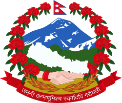
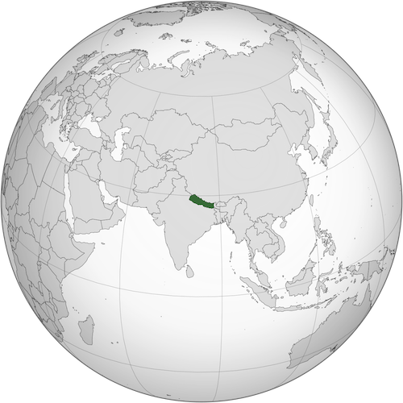

Wikipedia Create Account Login
From Wikipedia, the free encyclopedia
|
Content Top Etymology History Geography Politics and government Economy Infrastructure Demographics Culture See also Citations Further reading External links |
ContentNepal,[a] officially the Federal Democratic Republic of Nepal,[b] is a landlocked country in South Asia. It is mainly situated in the Himalayas, but also includes parts of the Indo-Gangetic Plain. It borders the Tibet Autonomous Region of China to the north, and India to the south, east, and west, while it is narrowly separated from Bangladesh by the Siliguri Corridor, and from Bhutan by the Indian state of Sikkim. Nepal has a diverse geography, including fertile plains, subalpine forested hills, and eight of the world's ten tallest mountains, including Mount Everest, the highest point on Earth. Kathmandu is the nation's capital and the largest city. Nepal is a multi-ethnic, multi-lingual, multi-religious and multi-cultural state, with Nepali as the official language. The name "Nepal" is first recorded in texts from the Vedic period of the Indian subcontinent, the era in ancient Nepal when Hinduism was founded, the predominant religion of the country. In the middle of the first millennium BC, Gautama Buddha, the founder of Buddhism, was born in Lumbini in southern Nepal. Parts of northern Nepal were intertwined with the culture of Tibet. The centrally located Kathmandu Valley is intertwined with the culture of Indo-Aryans, and was the seat of the prosperous Newar confederacy known as Nepal Mandala. The Himalayan branch of the ancient Silk Road was dominated by the valley's traders. The cosmopolitan region developed distinct traditional art and architecture. By the 18th century, the Gorkha Kingdom achieved the unification of Nepal. The Shah dynasty established the Kingdom of Nepal and later formed an alliance with the British Empire, under its Rana dynasty of premiers. The country was never colonised but served as a buffer state between Imperial China and British India. Parliamentary democracy was introduced in 1951 but was twice suspended by Nepalese monarchs, in 1960 and 2005. The Nepalese Civil War in the 1990s and early 2000s resulted in the establishment of a secular republic in 2008, ending the world's last Hindu monarchy. The Constitution of Nepal, adopted in 2015, affirms the country as a secular federal parliamentary republic divided into seven provinces. Nepal was admitted to the United Nations in 1955, and friendship treaties were signed with India in 1950 and China in 1960. Nepal hosts the permanent secretariat of the South Asian Association for Regional Cooperation (SAARC), of which it is a founding member. Nepal is also a member of the Non-Aligned Movement and the Bay of Bengal Initiative. The Nepalese Armed Forces are the fifth-largest in South Asia; and are notable for their Gurkha history, particularly during the world wars, and has been a significant contributor to United Nations peacekeeping operations. EtymologyBefore the unification of Nepal, the Kathmandu Valley was known as Nepal.[c] The precise origin of the term Nepāl is uncertain. Nepal appears in ancient Indian literary texts dated as far back as the fourth century BC.[which?] An absolute chronology can not be established, as even the oldest texts may contain anonymous contributions dating as late as the early modern period. Academic attempts to provide a plausible theory are hindered by the lack of a complete picture of history and insufficient understanding of linguistics or relevant Indo-European and Tibeto-Burman languages.[17] According to Hindu mythology, Nepal derives its name from an ancient Hindu sage called Ne, referred to variously as Ne Muni or Nemi. According to Pashupati Purāna , as a place protected by Ne, the country in the heart of the Himalayas came to be known as Nepāl.[18][19][d] According to Nepāl Mahātmya,[e] Nemi was charged with protection of the country by Pashupati.[20] According to Buddhist mythology, Manjushri Bodhisattva drained a primordial lake of serpents to create the Nepal valley and proclaimed that Adi-Buddha Ne would take care of the community that would settle it. As the cherished of Ne, the valley would be called Nepāl.[21] According to Gopalarājvamshāvali, the genealogy of ancient Gopala dynasty compiled c. 1380s, Nepal is named after Nepa the cowherd, the founder of the Nepali scion of the Abhiras. In this account, the cow that issued milk to the spot, at which Nepa discovered the Jyotirlinga of Pashupatināth upon investigation, was also named Ne.[17] Norwegian indologist Christian Lassen had proposed that Nepāla was a compound of Nipa (foot of a mountain) and -ala (short suffix for alaya meaning abode), and so Nepāla meant "abode at the foot of the mountain". He considered Ne Muni to be a fabrication.[22] Indologist Sylvain Levi found Lassen's theory untenable but had no theories of his own, only suggesting that either Newara is a vulgarism of sanskritic Nepala, or Nepala is Sanskritisation of the local ethnic;[23] his view has found some support though it does not answer the question of etymology.[24][25][26][17] It has also been proposed that Nepa is a Tibeto-Burman stem consisting of Ne (cattle) and Pa (keeper), reflecting the fact that early inhabitants of the valley were Gopalas (cowherds) and Mahispalas (buffalo-herds).[17] Suniti Kumar Chatterji believed Nepal originated from Tibeto-Burman roots – Ne, of uncertain meaning (as multiple possibilities exist), and pala or bal, whose meaning is lost entirely.[27] HistoryBy 55,000 years ago, the first modern humans had arrived on the Indian subcontinent from Africa, where they had earlier evolved.[28][29][30] The earliest known modern human remains in South Asia date to about 30,000 years ago.[31] The oldest discovered archaeological evidence of human settlements in Nepal dates to around the same time.[32] After 6500 BC, evidence for the domestication of food crops and animals, construction of permanent structures, and storage of agricultural surplus appeared in Mehrgarh and other sites in what is now Balochistan.[33] These gradually developed into the Indus Valley civilisation,[34][33] the first urban culture in South Asia.[35] Prehistoric sites of palaeolithic, mesolithic and neolithic origins have been discovered in the Siwalik hills of Dang district.[36] The earliest inhabitants of modern Nepal and adjoining areas are believed to be people from the Indus Valley civilisation. It is possible that the Dravidian people whose history predates the onset of the Bronze Age in the Indian subcontinent (around 6300 BC) inhabited the area before the arrival of other ethnic groups like the Tibeto-Burmans and Indo-Aryans from across the border.[37] By 4000 BC, the Tibeto-Burmese people had reached Nepal either directly across the Himalayas from Tibet or via Myanmar and north-east India or both.[38] Stella Kramrisch (1964) mentions a substratum of a race of pre-Dravidians and Dravidians, who were in Nepal even before the Newars, who formed the majority of the ancient inhabitants of the valley of Kathmandu.[39] By the late Vedic period, Nepal was being mentioned in various Hindu texts, such as the late Vedic Atharvaveda Pariśiṣṭa and in the post-Vedic Atharvashirsha Upanishad.[40] The Gopal Bansa was the oldest dynasty to be mentioned in various texts as the earliest rulers of the central Himalayan kingdom known by the name 'Nepal'.[41] The Gopalas were followed by Kiratas who ruled for over 16 centuries by some accounts.[42] According to the Mahabharata, the then Kirata king went to take part in the Battle of Kurukshetra. In the south-eastern region, Janakpurdham was the capital of the prosperous kingdom of Videha or Mithila, that extended down to the Ganges, and home to King Janaka and his daughter, Sita. Around 600 BC, small kingdoms and confederations of clans arose in the southern regions of Nepal. From one of these, the Shakya polity, arose a prince who later renounced his status to lead an ascetic life, founded Buddhism, and came to be known as Gautama Buddha (traditionally dated 563–483 BC).[43] Nepal came to be established as a land of spirituality and refuge in the intervening centuries, played an important role in transmitting Buddhism to East Asia via Tibet,[44] and helped preserve Hindu and Buddhist manuscripts. By 250 BC, the southern regions had come under the influence of the Maurya Empire. Emperor Ashoka made a pilgrimage to Lumbini and erected a pillar at Buddha's birthplace, the inscriptions on which mark the starting point for properly recorded history of Nepal.[45] Ashoka also visited the Kathmandu valley and built monuments commemorating Gautama Buddha's visit there. By the 4th century AD, much of Nepal was under the influence of the Gupta Empire.[f][46] In the Kathmandu valley, the Kiratas were pushed eastward by the Licchavis, and the Licchavi dynasty came into power c. 400 AD. The Lichchhavis built monuments and left a series of inscriptions; Nepal's history of the period is pieced together almost entirely from them.[47][44] In 641, Songtsen Gampo of the Tibetan Empire sends Narendradeva back to Licchavi with an army and subjugates Nepal. Parts of Nepal and Licchavi was later under the direct influences of the Tibetan empire.[48] The Licchavi dynasty went into decline in the late 8th century and was followed by a Thakuri rule. Thakuri kings ruled over the country up to the middle of the 11th century AD; not much is known of this period that is often called the dark period.[49] In the 11th century, a powerful empire of Khas people emerged in western Nepal whose territory at its highest peak included much of western Nepal as well as parts of western Tibet and Uttarakhand of India. By the 14th century, the empire had splintered into loosely associated Baise rajyas, literally 22 states as they were counted. The rich culture and language of the Khas people spread throughout Nepal and as far as Indo-China in the intervening centuries; their language, later renamed the Nepali language, became the lingua franca of Nepal as well as much of North-east India.[44] In south-eastern Nepal, Simraungarh annexed Mithila around 1100 AD, and the unified Tirhut stood as a powerful kingdom for more than 200 years,[50] even ruling over Kathmandu for a time.[51] After another 300 years of Muslim rule, Tirhut came under the control of the Sens of Makawanpur.[50] In the eastern hills, a confederation of Kirat principalities ruled the area between Kathmandu and Bengal. In the Kathmandu valley, the Mallas, who make several appearances in Nepalese history since ancient times, had established themselves in Kathmandu and Patan by the middle of the 14th century. The Mallas ruled the valley first under the suzerainty of Tirhut but established independent reign by late 14th century as Tirhut went into decline. In the late 14th century, Jayasthiti Malla introduced widespread socio-economic reforms, principal of which was the caste system. By dividing the indigenous non-Aryan Buddhist population into castes modelled after the four Varna system of Hinduism, he provided an influential model for the Sanskritisation and Hinduisation of the indigenous non-Hindu tribal populations in all principalities throughout Nepal. By the middle of the 15th century, Kathmandu had become a powerful empire which, according to Kirkpatrick, extended from Digarchi or Sigatse in Tibet to Tirhut and Gaya in India.[52] In the late 15th century, Malla princes divided their kingdom in four – Kathmandu, Patan and Bhaktapur in the valley and Banepa to the east. The competition for prestige among these brotherly kingdoms saw the flourishing of art and architecture in central Nepal, and the building of famous Kathmandu, Patan and Bhaktapur Durbar Squares; their division and mistrust led to their fall in the late 18th century, and ultimately, the unification of Nepal into a modern state.[44][53] Apart from one destructive sacking of Kathmandu valley in the mid 14th century,[54] Nepal remains largely untouched by the Muslim invasion of India that began in the 11th century. The Mughal period saw an influx of high-caste Hindus from India into Nepal. They soon intermingled with the Khas people and by the 16th century, there were about 50 Rajput-ruled principalities in Nepal, including the 22 (Baisi) states and, to their east in west-central Nepal, 24 Chaubisi states. There emerged a view that Nepal remained the true bastion of unadulterated Hinduism at a time when Indian culture had been influenced by centuries of Mughal, followed by British rule. Gorkha, one of the Baisi states, emerged as an influential and ambitious kingdom with a reputation for justice, after it codified the first Hinduism-based laws in the Nepalese hills.[44]In the mid-18th century, Prithvi Narayan Shah, a Gorkha king, set out to put together what would become present-day Nepal. He embarked on his mission by securing the neutrality of the bordering mountain kingdoms. After several bloody battles and sieges, notably the Battle of Kirtipur, he managed to conquer the Kathmandu Valley in 1769.[55] The Gorkha control reached its height when the Kumaon and Garhwal Kingdoms in the west to Sikkim in the east came under Nepalese control. A dispute with Tibet over the control of mountain passes and inner Tingri valleys of Tibet prompted the Qing Emperor of China to start the Sino-Nepali War compelling the Nepali to retreat to their own borders in the north.[56] The rivalry between the Kingdom of Nepal and the East India Company over the control of states bordering Nepal eventually led to the Anglo-Nepali War (1815–16). At first, the British underestimated the Nepali and were soundly defeated until committing more military resources than they had anticipated needing. Thus began the reputation of Gurkhas as fierce and ruthless soldiers. The war ended in the Sugauli Treaty, under which Nepal ceded recently captured lands.[57][44] Factionalism inside the royal family led to a period of instability. In 1846, a plot was discovered revealing that the reigning queen had planned to overthrow Jung Bahadur Kunwar, a fast-rising military leader. This led to the Kot massacre; armed clashes between military personnel and administrators loyal to the queen led to the execution of several hundred princes and chieftains around the country. Bir Narsingh Kunwar emerged victoriously and founded the Rana dynasty, and came to be known as Jung Bahadur Rana. The king was made a titular figure, and the post of Prime Minister was made powerful and hereditary. The Ranas were staunchly pro-British and assisted them during the Indian Rebellion of 1857 (and later in both World Wars). In 1860 some parts of the western Terai region were gifted to Nepal by the British as a friendly gesture because of her military help to sustain British control in India during the rebellion (known as Naya Muluk, new country). In 1923, the United Kingdom and Nepal formally signed an agreement of friendship that superseded the Sugauli Treaty of 1816.[58] The Hindu practice of Sati, in which a widow sacrificed herself in the funeral pyre of her husband, was banned in 1919, and slavery was officially abolished in 1924.[59] Rana rule was marked by tyranny, debauchery, economic exploitation and religious persecution.[60][61] Contemporary history In the late 1940s, newly emerging pro-democracy movements and political parties in Nepal were critical of the Rana autocracy. Following the success of Indian Independence Movement which Nepalese activists had taken part in, with India's support and cooperation of King Tribhuvan, Nepali Congress was successful in toppling the Rana regime, establishing a parliamentary democracy. After a decade of power wrangling between the king and the government, King Mahendra (ruled 1955–1972) scrapped the democratic experiment in 1960, and a "partyless" Panchayat system was made to govern Nepal. The political parties were banned and politicians imprisoned or exiled.[62] The Panchayat rule modernised the country, introducing reforms and developing infrastructure, but curtailed liberties and imposed heavy censorship. In 1990, the People's Movement forced King Birendra (ruled 1972–2001) to accept constitutional reforms and to establish a multiparty democracy.[62][63] In 1996, the Maoist Party started a violent bid to replace the royal parliamentary system with a people's republic.[62] This led to the long Nepali Civil War and more than 16,000 deaths.[64] With the death of both the King and the Crown Prince in a massacre in the royal palace, King Birendra's brother Gyanendra inherited the throne in 2001[62] and subsequently assumed full executive powers aiming to quash the Maoist insurgency himself.[65] The Maoist Party joined mainstream politics following the success of the peaceful democratic revolution of 2006;[66] Nepal became a secular state,[67] and on 28 May 2008, it was declared a federal republic,[66] ending its time-honoured status as the world's only Hindu kingdom.[68] After a decade of instability and internal strife which saw two constituent assembly elections,[69][70][71][72] the new constitution was promulgated on 20 September 2015, making Nepal a federal democratic republic divided into seven provinces.[73][74] |
Federal Democratic Republic of Nepal Motto: जननी जन्मभूमिश्च स्वर्गादपि गरीयसी (Sanskrit) Janani Janmabhumishcha Swargadapi Gariyasi "Mother and Motherland are Greater Than Heaven" Anthem: सयौँ थुँगा फूलका (Nepali) Sayaun Thunga Phulka "Made of Hundreds of Flowers"  Capital and largest city Kathmandu[1] 28°10′N 84°15′E Official languages Nepali[2] Recognised national languages All mother-tongues[3][4] (see Languages of Nepal) Official languages Nepali[2] Recognised national languages All mother-tongues[3][4] (see Languages of Nepal) Ethnic groups (2011)[5] 31.25% Khas Arya 16.6% Chhetri 12.2% Bahun 1.6% Thakuri 0.86% Sanyasi 7.1% Magar 6.6% Tharu 5.8% Tamang 5% Newar 4.4% Musalman 4% Yadav 2.3% Rai 2% Gurung 1.5% Limbu 19.47% other Religion (2021)[6] 81.19% Hinduism 8.21% Buddhism 5.09% Islam 3.17% Kirant 1.76% Christianity 0.35% Prakriti 0.23% Bon 0.01% Jainism Demonym(s) NepaliNepalese Government Federal parliamentary republic • President Ram Chandra Poudel • Vice President Ram Sahaya Yadav • Prime Minister Pushpa Kamal Dahal • Chief Justice Bishowambhar Prasad Shrestha Legislature Federal Parliament • Upper house National Assembly • Lower house House of Representatives Formation • Unification 25 September 1768[7] • Treaty of Sugauli[8] 4 March 1816 • Nepal–Britain Treaty of 1923[9] 21 December 1923 • Federal Republic 28 May 2008 • Current constitution 20 September 2015 Area • Total 147,516 km2 (56,956 sq mi) (93rd) • Water (%) 2.8% Population • 2022 estimate 30,666,598[10] (49th) • Density 180/km2 (466.2/sq mi) (72nd) Date format YYYY/MM/DD Driving side: left Calling code: +977 ISO 3166 code NP Internet TLD .np |
|---|